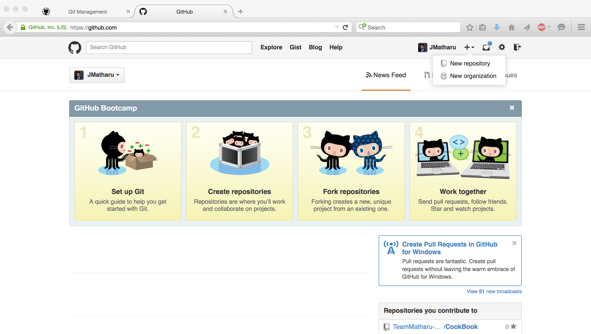
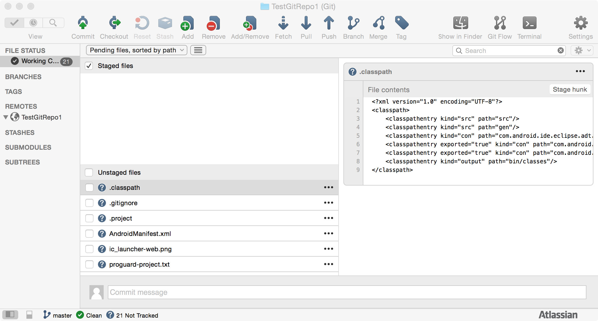
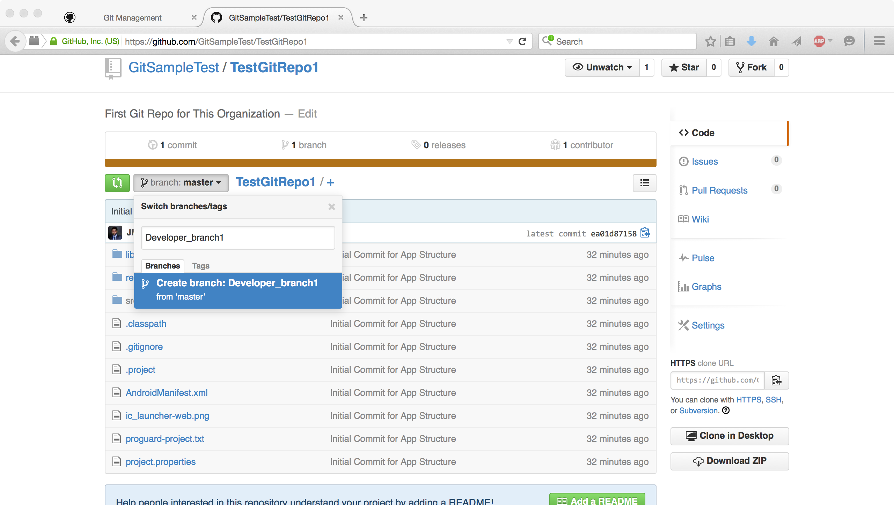
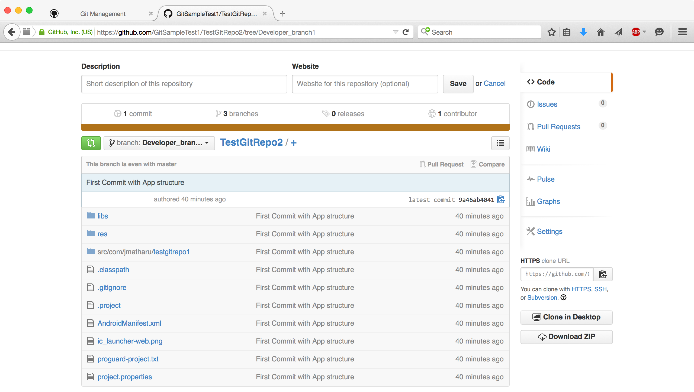
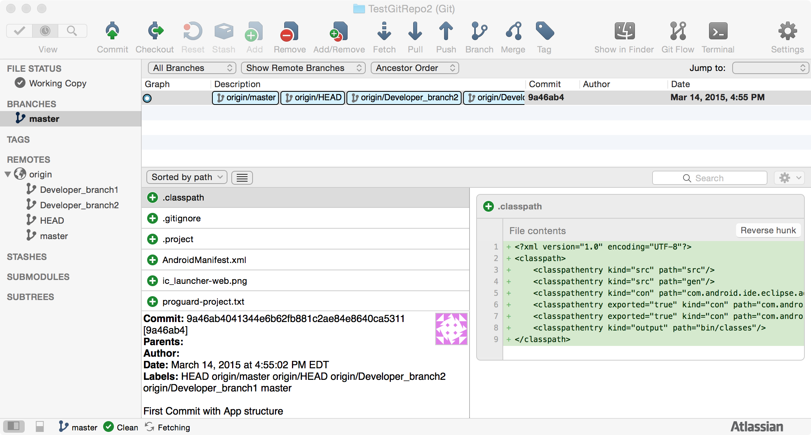

Basic GIT flow
git initgit add .git commitgit statusgit pushgit branchgit pull
To understand what Git Management is, lets move a step back and understand what Git and Version Control System is. There are tons of tutorials of Git on Internet which tells in detail what/where/how Git is used (One of them I like and Recommend is How to Use Git and GitHub by Udacity.
Git is a free and open source distributed version control system designed to handle, track and manage code by single user or group of users.
In simple words Version Control System is a GIANT UNDO button of your project. It just makes easy to save diffrent versions of your file at diffrent point of time, you can restore previous version and compare diffrent version. Colaboration can be done very Easily and Smoothly, lets say no more sending of sending huge ZIP files back and forth.
Now in this tutorial I will only focusing on Git Management rather than on Learning GIT.
And Also I will consider that you have basic knowledge and experience with Git and GitHub, if in case you don't have follow some or the Git Tutorials that I have given link of above.
git initgit add .git commitgit statusgit pushgit branchgit pull
We will use Atlassian SourceTree as our GUI client to manage our code and tracking what is the state of our project (Local an GitHub)
DownLoad Here - SourceTree
I have used other GUI (like GitHub for Windows or MAC), but being honest "SourceTree" is better and pretty simple for beginners. So just trust me and stick to SourceTree .
Secure Shell or SSH is a network protocol that allows data to be exchanged using a secure channel between two network devices.
I recommend you to config your machine with SSH keys, that will basically provide confidentiality and integrity of data over an unsecured network.
How to Config for SSH - MAC, Windows or Linux
Before I start, I want to mention that I always recommend all to use terminal, just because that gives more base knowledge to what is happening while you work with GIT.
But this tutorial is focussing on those users who are new to Git and need to understand GitHub management in simple and easy way.
At this point I am assumng you have configured your machine with GIT and Source Tree. If still have any issues or confussion get back to my Prerequisite section above.
Goal of this Tutorial is to help Students who started using GitHub for their projects and are not very much familier with how to work with team using GitHub. This ideal situation is in Colleges/Universities team projects.
Team Members : Following are the team members that are most commonly there in a software projects
1 . ScrumMaster/Customer - The ScrumMaster is responsible for making sure a Scrum team lives by the values and practices of Scrum. The ScrumMaster does anything possible to help the team perform at their highest level. This involves removing any impediments to progress, facilitating meetings, making sure the product backlog is in good shape and ready for the next sprint/iteraion
2 . Developers - We all know what they are and what they do
Just to add to your thoughts, they say "How can I make it?"
3 . Testers - We all know this as well, what they are and what they do
And they say "How can I Break it?"
Now lets take a step forward and if you are Team's "ScrumMaster/Customer" then go to your GitHub account and Log In.
NOTE : Step 1 to 6 is specifically for ScrumMaster/Customer.
1 . You will see screen like below that will show your UserName on top right side of NavBar, Click On the icon next to it and you will see DropDown Menu, click "New organization", as shown below. 
2 . Next to this fill details in "Create an organization" page and click "Create Organization".
3 . Next, Invite other GitHub users to your organization to add them as a contributer. You can search by their Github UserName. When you are done with inviting other users, click "Finish".
Note : You can Add or delete Contributers later also.
4 . Next, you can create as many Repositories in this Organization, as you want by clicking the "New repository" button(in Green). Make sure you don't select "New repository" from nav bar as seen in Step 1.
All repositories created under this organzation can be Accessed/Updated by all Contributers.

5 . Next, Open "Create new Repository" page and enter fields, As shown below.
Note : At this step I assume you have correctly created Organization and then Repository/Repositories in that. Now make sure you add .gitignore file into your Repository (It's a good GitHub/Git practice). You can add via Github(as seen below) or from your project in your machine.
In this Tutorial I will add ".gitignore" file from my machine.
6 . Clicking on "Create repository" will lead you to new created repository. Note, there are some GIT commands that you see in this picture below that is basically used to sync your project on your local machine to Github.
7 . Now lets take a Pause from GitHub and setup our project environment on our Local Machine and we will get back to GitHub after that.
In this section we will see how to add our Local project and config it to the newly created GitHub repository.
At this point you should have configured your Source tree with your User Name and Password and other configuration if needed.
For this tutorial I will use an Android Project as a sample project, you can use any Project as your project.
NOTE : Step 1 to 8 is specifically for ScrumMaster/Customer.
1 . First Lets Create an Empty Folder and then create a new Android Project in that specific Location.
At this point you should include ".gitignore" file in your project, as I mentioned above it is a good programming/Git practice to this file. Refer to this to create one for your project -
2 . Now Open SourceTree and click on "File" "New / Clone", a drop down will open with various different options as seen below.
As I am using MAC OS for this tutorial, so some of the UI element will not be same as of windows, but not to fear as they all are same for MAC and Windows and are easy understandable irrespective of UI.
3 . Click on "Add Existing Local repository" and choose the path where you have created your project, then click OK.
Then "Create a local repository" dialog will open as shown below, make sure you select "GIT" in type and uncheck "Also create remort repository" as we already have our remote repository set up earlier in "Setting up GitHub" section.
4 . Now here SourceTree is having your local repository, we will get into this in deep very soon but before that lets config our local repository to the GitHub.
5 . Now just click on "Settings" on top right corner side of SourceTree (can be seen in above image)
And you will see a dialog box like image below.
6 . Now click "Add" button and then go you your Github account where you have created your repository (in this case its "TestGitRepo1" Refer to : Step 6 in - Setting up GitHub)
7 . Now you copy https link from Step 6 in - "Setting up GitHub" into Source tree, and enter name of Repository(preferably same as in GitHub)
Note : You dont need to enter Host type, Host Root URL, and UserName (as all this is automatically configured accordingly)
Noticable thing is that we havn't used any Git command till now and believe me we won't use it next as well.
8 . Now lets push code to your GitHub repository
Note, that you see "TestGitRepo1" under "Remotes" on left tab - That indicates that this SourceTree repo is configurd to "TestGitRepo1" repository.


Lets understand what is going on here
- We created our Project
- We added all files to Staging
- We committed all added files to Staging
Note : You may or may not be asked to enter your password of GitHub.
What Happened
You have created your project, commited to Git and then Pushed the code to GitHub into your "master" branch.
We have seen that we pushed code to Github into master branch and out Github repository shows us the updated code, but the question is where other team members will push code.
Here is the Answer.
NOTE : Step 1 to 3 is specifically for ScrumMaster/Customer.
1 . Now you go to your Github repository, click master branch and then enter the name of new branch in text field as shown below. 
2 . Now the question is why are we creating new branches now, we could have done that in very first step when we created our repository.
The answer is clear when you will see the newly created branch.

You will see the new branches are exactly mirror image of master branch, with this we can make sure that we won't have conflict in our master branch which can be there if each developer create their own project and push to their own branch.
3 . Similarly we can create as many branches as we needed, in this tutorial I will create total 2 branches.
Happy Note for ScrumMaster
I know until this point all work and management was done by ScrumMaster, but thats it ScrumMaster has done most part of managing GitHub. It's turn to sit back and let developers do their code and play with Github. Again, I said Play no Mess.
What we did till this point?
NOTE : Step 1 to 5 is specifically for Developers.
Now lets get back to what we were doing. Following steps are for Developers
1 . At this point Developer has branches into their GitHub account but dont have similar code in their local machine.
So the first step will be that they sync remote repository to their local machine so that they can start their work.
Now Open SourceTree and click on "File" "New / Clone", a drop down will open with various different options as seen below.
2 . This time click on "Clone from URL", and you will see a dialog box somthing like this.
3 . Now Go to GitHub and copy HTTPS URL from right sidebar as seen in Image. 
4 . Now copy that URl to "Source URL", add "Destination Path" as you like (must be an empty folder) and Name of repository.
You can check out from different branches via going to Advance Options.

Now click "Clone".
5 . Lets see how your SourceTree looks like when you pulled all code from Github, and lets understand what is going on.

See Left sidebar
Now at this point ScrumMaster has latest code in its local repository and in Remote master Branch. And so as Developers have same code in their Local and Remote branches.
Now as a developer lets make some changes into our local branch and see what happens next.
Note : Developers usually are assigned with some tasks and and according to that they make changes that they have completed some tasks that are assigned to them.
NOTE : Step 1 to 8 is specifically for Developers.
1 . Lets say as a developer you completed your task and have done Unit Testing on your code and now you want your Github repository to have this updated code.
Here is how your SourceTree looks when you update project
Lets explain what you see here
2 . Now add files to staging and then commit with a commit message as in image below, make sure "Push changes immediately to origin/Master" is unchecked and you don't push at this point.
3 . After you commit you see the Description box shows you are 1 commit ahead of master, and also shows your commit message.
4 . It's time to push code.
You go to Branches(loacal) master Push to origin
5 . A dialog box will open. Under Remote branch you will see all remote branches.
Select the one that belongs to you.
And press "Ok"
6 . Now go to GitHub to your repository, you will see something like below.
7 . Click on "Compare and Pull request"
You will see something like below
8 . Now click on "Create pull request" (You can add Write comments to this pull request before you want to create one)
Now you will see something like this
This Pull request can be assigned to ScrumMaster/Customer by clicking on Assignee and then assign him/her this task.
In any case only ScrumMaster should do next steps on Pull request

Up to this step Developer has pushed code and then send a Pull Request to ScrumMaster
Now From Step 9 to asdahsgdjhags ScrumMaster/Customer is back on work.
9 . Now ScrumMaster will see 1 Pull request on right side bar as in image below
ScrumMaster clicks on that pull request, and opens that pull request as in image below
Note : If there is any conflict then GitHub will block "Merge pull request" button, so to avoid this make sure you understand what the flow is

What happened till now
So we can say now Master Branch has code of First commit and Commit made by Developer 1, in short master branch has latest and greatest code
- Developer 1 Pushed code to its Remote Branch
- Gave Pull request to ScrumMaster/Customer
- ScrumMaster then Compare the Code and Merge Request
10 . Now Developer 2 will pull code from this latest Remote master into its local repository and will get the latest code which includes the code from Developer 1 as well.
You will get a dialog box asking you to confirm pull, hit "Ok"

11 . Now Developer 2 will complete his/her task and Now Developer 2 will repeat same steps as did by Developer 1 from Step 1 to Step 8 above.
12 . After Developer 2 completes step 1 - 8 then ScrumMaster will repeat Step 9
This loop between Step 1 to Step 9 should be there between each developers and ScrumMaster through out the project
This makes sure that your master Branch has latest and greatest code for your Release.
The Basic reason of using this method over "fork and pull"
I hope you find this tutorial useful.
Feel free to get in touch if you have any questions or suggestions.